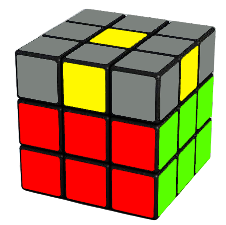
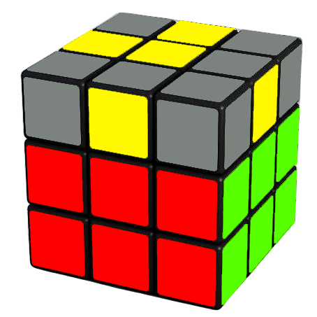
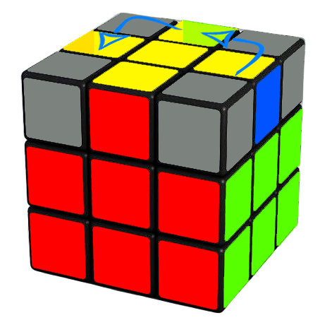
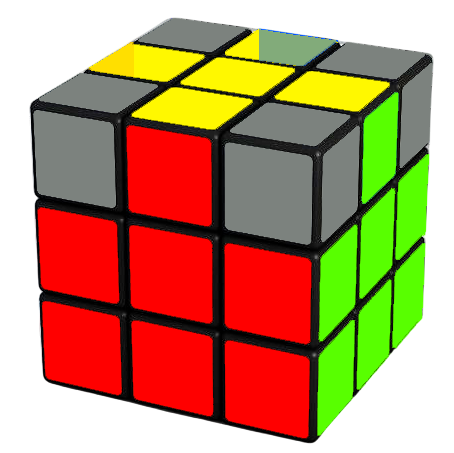
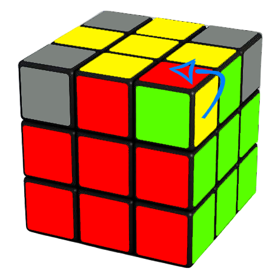

Welcome to the Last Layer tutorial of Cubing 101! In this section, we will guide you through the steps to solve the last layer of the Rubik's Cube, which involves orienting and permuting the pieces to complete the cube.
The first step in solving the last layer is to solve the top edges. These are usually colored yellow (if you followed our color scheme).
After solving the Second Layer, the next step is to form the yellow cross on the top face by orienting the last layer edges correctly. You will get one of the 3 cases shown below. Just perform the algorithm shown for your case to get the yellow cross.
F R U R' U' F' f R U R' U' f'
f R U R' U' f'

F R U R' U' F'
Note: If you already have the yellow cross, you can proceed to the next step.
Once you have the yellow cross, the next step is to solve the edges. Depending on the case you get, follow the steps below and you can successfully position the edges in their correct places.
NOTE: It is important that you first align the top layer so that one edge matches only.
When 3 edges need to be placed correctly: R U R' U R U2 R'
When 2 adjacent edges need to be placed correctly: Turn the top layer once. You should now have the case shown above, solve as described above.

When 2 opposite edges need to be placed correctly: Repeat algorithm above. You should now have the first case, solve as described above.
With the edges solved, the next step is to solve the corners of the last layer. Once again, these are usually yellow (if you followed our color scheme).
Note: Remember not to turn the top layer freely. The edges must remain aligned.
The first step in solving the corners is to position them correctly. A correctly positioned corner doesn't have to be solved, as the corner below is also positioned correctly.

Once you have a corner positioned correctly, keep it facing towards you and on the right. Then, perform the algorithm U R U' L' U R' U' L until all the corners are positioned correctly.

Special Case: If you don't have any corners positioned correctly, perform the algorithm from any angle until you get at least one corner positioned correctly.
With all the corners positioned correctly, the final step is to solve them. Hold the cube so that an unsolved corner is on the front-right-top position. Then, repeat the algorithm below until the corner is solved. Note: The bottom layer WILL be messed up in this step. Hang on for now.
R' D' R D
Once the corner is solved, rotate ONLY the top layer (not the whole cube) to the next unsolved corner and repeat the algorithm until all corners are solved.
If done correctly, the bottom layer will solve itself as you complete the last step.
Congratulations! You have successfully solved the Rubik's Cube!